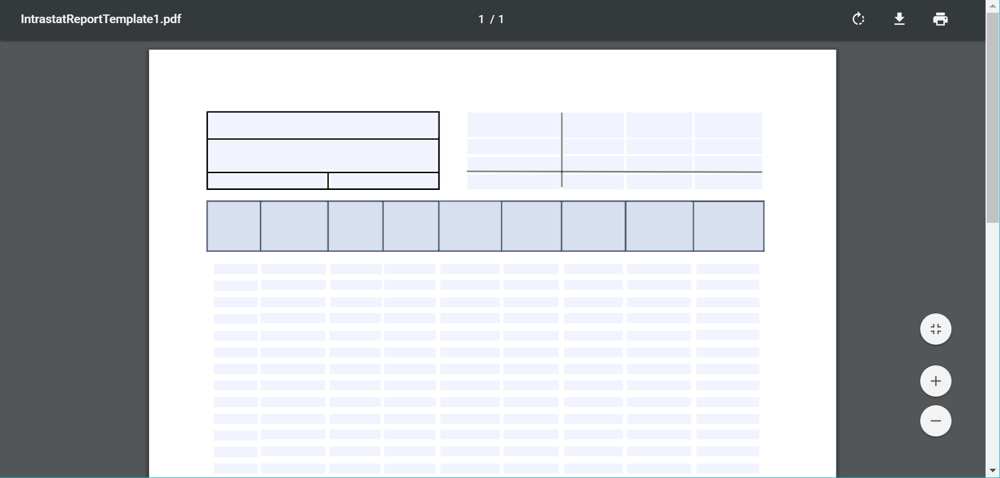
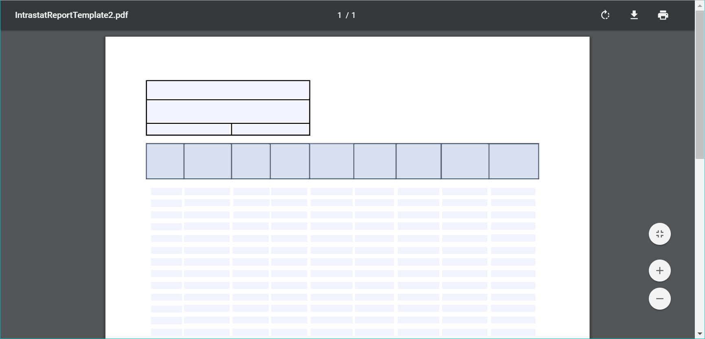
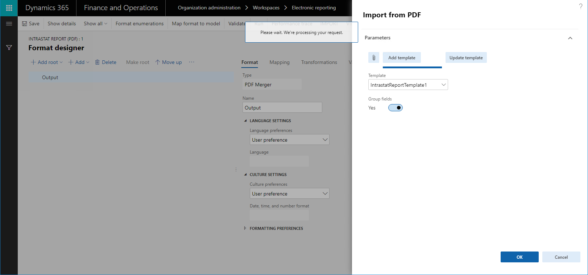
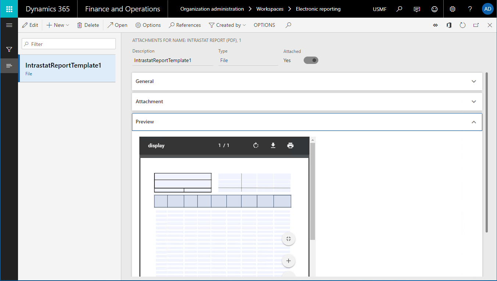
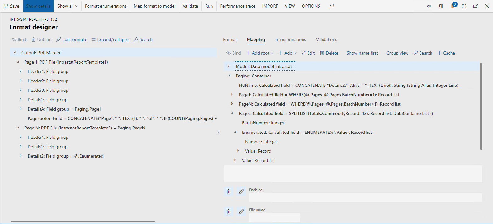
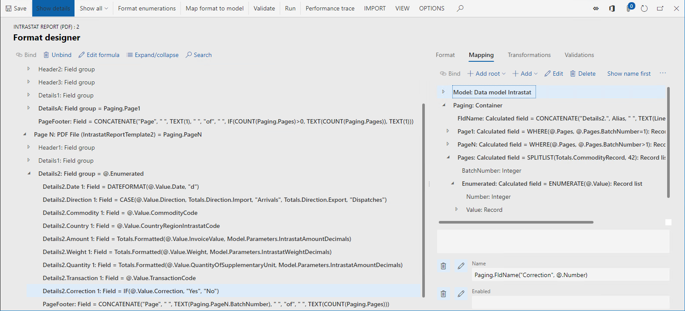
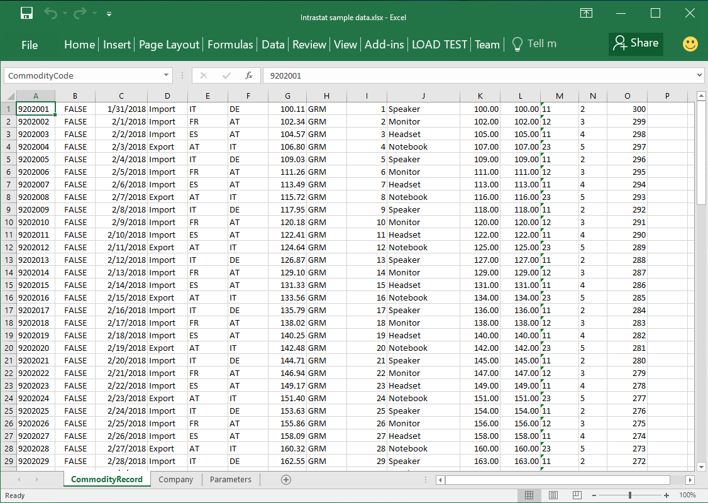
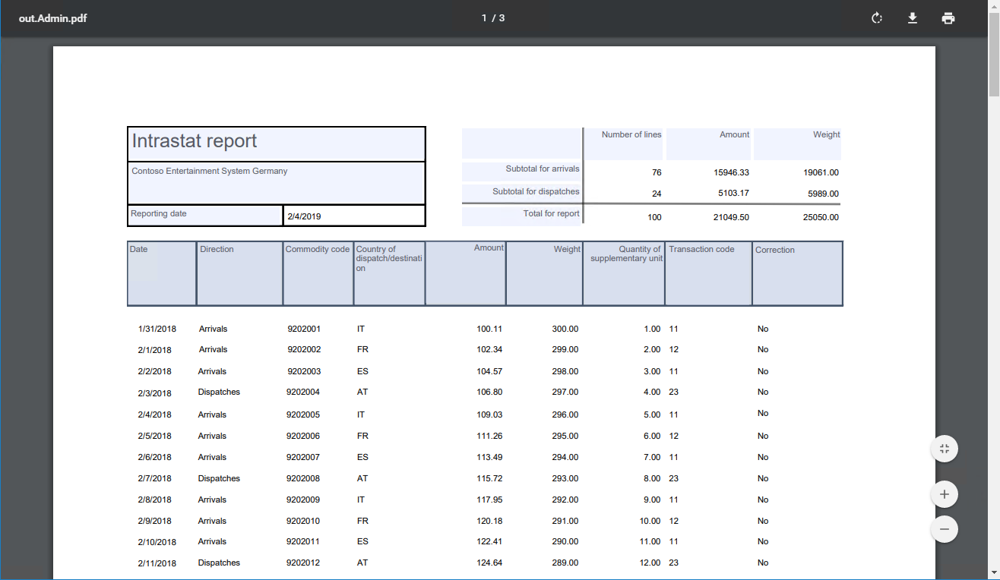
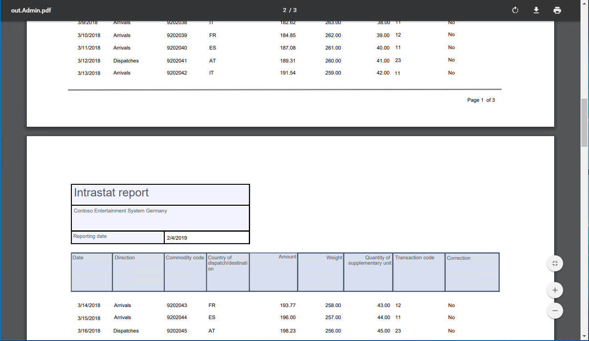

ER-Konfigurationen zum Ausfüllen von PDF-Vorlagen entwerfen
[!include[banner](../includes/banner.md)]Die Schritte in diesem Thema sind Beispiele, die angegeben, wie ein Benutzer entweder in der Rolle Systemadministrator oder in der Rolle Elektronischer Berichterstellungsentwickler ein elektronisches Meldeformat (ER) konfigurieren kann, das Bericht als PDF-Dokumente erstellt, indem ablagefähige PDF-Dokumente als Berichtsvorlagen verwendet werden. Diese Schritte können in einem beliebigen Unternehmen von Dynamics 365 Finance oder in den Regulatory Configuration Services (RCS) ausgeführt werden.
Voraussetzungen
Bevor Sie beginnen, müssen Sie eine der folgenden Arten des Zugriffs haben, abhängig vom Service der verwendet wird, wenn Sie die Prozeduren in diesem Thema ausführen:
Zugriff auf Finance für eine der folgenden Rollen:
- Entwickler für elektronische Berichterstellung
- Funktionaler Berater für elektronische Berichterstellung
- Systemadministrator
Zugriff auf RCS für eine der folgenden Rollen:
- Entwickler für elektronische Berichterstellung
- Funktionaler Berater für elektronische Berichterstellung
- Systemadministrator
Außerdem müssen Sie die Prozedur Konfigurationsanbieter anlegen ausfüllen und als aktiv markieren.
Schließlich müssen Sie die folgenden Dateien herunterladen vonCustomerSource.
| Inhaltsbeschreibung | Dateiname |
|---|---|
| Vorlage für die erste Seite des Berichts | IntrastatReportTemplate1.pdf |
| Vorlage für die anderen Seiten des Berichts | IntrastatReportTemplate2.pdf |
| Beispielformat ER - PDF | Intrastat-Bericht (PDF) .version.1.1.xml |
| Beispiel-ER-Format - Excel | Intrastat (Import von Excel).version.1.1.xml |
| Beispieldatensatz | Intrastat-Beispiel data.xlsx |
Eine Formatkonfiguration entwerfen
Zugriff auf die Liste von Microsoft bereitgestellte von den Konfigurationen erhalten
Wechseln Sie zu Organisationsverwaltung >Arbeitsbereiche > Elektronische Berichterstellung.
Überprüfen Sie, ob der Anbieter Litware, Inc verfügbar und als aktiv markiert ist.
Auf der Kachel für den Anbieter Microsoft, wählen Sie Repositorys aus.
Note
Wenn ein Repository des Typs Kreditbriefen bereits vorhanden, überspringen Sie die restlichen Schritte dieser Prozedur.
Wählen Sie Hinzufügen aus.
Im Drop-Down-Dialogfeld in der Feldgruppe Konfigurationsrepositorytyp, wählen Sie die Option Kreditbriefe aus.
Wählen Sie Repository erstellen.
Wählen Sie OK.
Modell-Konfigurationen von Microsoft erhalten
Auf der linken Seite des Konfigurationsrepositorys der Seite wählen Sie die Schaltfläche Filter anzeigen aus (Trichtersymbol).
Hier können Sie einen Filter für einen Wert von Kreditbriefen im Feld Typ hinzufügen und den Operator beginnen mit verwenden.
Wählen Sie Anwenden aus.
Wählen Sie Öffnen.
In der Struktur wählen Sie Intrasrat-Modell aus.
Wählen Sie im Inforegister Versionen die Version 1 aus.
Note
Wenn die Schaltfläche Importieren auf dem Inforegister Versionen nicht verfügbar ist, fahren Sie mit den restlichen Schritten dieser Prozedur fort.
Import auswählen
Wählen Sie Ja aus, um den Import der ausgewählten Version der Intrastat-Modell Modellkonfiguration zu bestätigen.
Dient zum Erstellen einer neuen Format-Konfiguration.
Im Arbeitsbereich Elektronische Berichterstellung wählen Sie die Kachel Berichterstellungskonfigurationen aus.
In der Struktur wählen Sie Intrasrat-Modell aus.
Wählen Sie Konfiguration erstellen.
Note
Wenn die Schaltfläche Konfiguration erstellen nicht verfügbar ist, müssen Sie den Entwurfsmodus der Seite Elektronische Berichterstellungsparameter aktivieren, die vom Elektronische Berichterstellung Arbeitsbereich geöffnet werden kann.
Im Drop-Down-Dialogfeld in der Feldgruppe Neu, wählen Sie die Option Format basierend aud Intrastat-Datenmodell aus.
Geben Sie im Feld Name den Intrastat-Bericht (PDF) ein.
Im Feld Beschreibung geben Sie Intrastat-Bericht im PDF-Format ein.
Note
Der aktive Konfigurationsanbieter wird automatisch eingegeben. Dieser Anbieter ist in der Lage, diese Konfiguration verwalten. Obwohl andere Anbieter diese Konfiguration verwenden können, werden sie nicht in der Lage sein, sie zu verwalten.
Optional: Im Feld Formattyp können Sie ein spezifisches Format von einem elektronischen Dokument auswählen. Wenn Sie PDF auswählen zur Entwurfszeit bietet der EB-Arbeitsgangsdesigner derzeit die Formatelemente an, die nur Dokumenten zugeordnet sind, die im PDF-Format generiert werden (\ PDF Datei, PDF\ PDF-Merge-Programm, usw.). Wenn Sie dieses Feld leer lassen, wird ein Format elektronischer Dokumente zur Entwurfszeit im EB-Arbeitsgangsdesigner angegeben, wenn ein erstes Formatelement hinzugefügt wird. Wenn Sie beispielsweise Excel\Datei hinzufügen, da das erste Formatelement, der EB-Arbeitsgangsdesigner Ihnen derzeit die Formatelemente anbietet, die nur Dokumenten zugeordnet sind, die im Excel-Format generiert werden (Excel\Zelle, Excel\Bereich, usw.). Formatieren.
Wählen Sie Konfiguration erstellen.
Eine neue ER-formatkonfiguration wird erstellt. Sie können die Entwurfsversion dieser Konfiguration verwenden, um die ER-Formatkomponente zu speichern, die entworfen wurde, um die elektronischen Dokumente im PDF-Format zu generieren.
Entwerfen Sie Format elektronischer Dokumente
In der ER-Formatkonfiguration, die Sie erstellt haben, entwerfen Sie das ER-Format, das den Intrastat-Steuerelement Bericht im PDF-Format generiert. Die erste Seite dieses Berichts muss eine Zusammenfassung des Berichts und der Details der Außenhandelbuchungen anzeigen, die gemeldt werden. Die anderen Seiten müssen nur Details der Außenhandelbuchungen anzeigen, die als abgeschlossen gemeldet werden. Da die Berichtsseiten, die generiert werden, unterschiedliche Layouts haben müssen, werden zwei unterschiedliche Vorlagen im PDF-Format im ER-Format verwendet.
In jedem beliebigen PDF-Viewer öffnen Sie die PDF-Vorlagen Sie, die heruntergeladen haben. Beachten Sie, dass jede Vorlage mehrere Felder enthält, die ausgefüllt werden müssen. In jeder Vorlage werden Details aus Außenhandelbuchungen als 42 Zeilen dargestellt, in der jede neun Felder hat. Die Eintragsnummer wird am Ende jedes des Feldnamens (beispielsweise Datum 1…Datum 42 und Ware 1…Ware 42) angezeigt.
Die folgende Abbildung zeigt die PDF-Vorlage für die erste Seite des Berichts an.

Die folgende Abbildung zeigt die PDF-Vorlage für die anderen Seiten des Berichts an.

Wählen Sie auf der Seite Konfigurationen die Option Designer aus.
Wählen Sie Stamm hinzufügen aus.
Im Drop-Down-Dialogfeld in der Struktur, wählen Sie PDF > PDF zusammenführen aus.
Wenn Sie das Element PDF zusammenführen als das Stammelement des Formats auswählen, werden alle PDF-Dokumente, die zur Laufzeit generiert werden, in ein einzelnes Dokument des PDF-Dokuments zusammengeführt. Wenn Sie nur eine PDF-Vorlage benötigen, um alle erforderlichen Dokumente zu generieren, indem Sie das ER-Format verwenden, das Sie entwerfen, können Sie das Stammelement PDF-Datei als Stammelement auswählen.
Geben Sie im Feld Name die Bezeichnung Ausgabe ein.
Wählen Sie im Feld Sprachpräferenz die Benutzerpräferenzen aus. Der Bericht wird in der bevorzugten Sprache des Benutzers generiert, der sie ausführt.
Wählen Sie im Feld Kulturpräferenz die Benutzerpräferenzen aus. Werte und Daten, die auf den Seiten des Berichts angezeigt werden, werden auf Grundlage des bevorzugten Gebietsschemas des Benutzers formatiert, damit der Bericht ausgeführt wird.
Wählen Sie OK.
Klicken Sie im Aktivitätsbereich auf die Registerkarte Importieren, und wählen Sie Importieren aus PDF aus.
Wenn ein auffüllbares PDF-Dokument als Vorlage für dieses ER-Format importiert wird, werden alle erforderlichen ER-Formatelemente (PDF-Datei,Feldgruppe und Feld Elemente) automatisch im Format erstellt, das entwickelt wurde, basierend auf der Struktur des PDF-Dokuments, das importiert wird.
Wählen Sie Durchsuchen aus. Navigieren Sie zu IntrastatReportTemplate1.pdf und wählen Sie die Datei aus, die Sie eben als Vorbedingung heruntergeladen haben.
Wählen Sie OK.
Die ausgewählte Datei wird geladen und das Feld Vorlage im Dialogfeld Import aus PDF wird ausgefüllt.
Legen Sie die Option Gruppenfelder auf Ja fest. Wenn das ausgewählte PDF-Dokument beliebige Feldgruppen enthält, werden sie verwendet, um die ER-Formatelemente zu gruppieren, die erstellt wurden. Ein Feldgruppe Formatelement wird deshalb erstellt.
Ist die Option auf Nein festgelegt, werden die erforderlichen ER-Formatelemente als flache Liste von Elementen erstellt, die im Formatelementr PDF-Datei geschachtelt werden, das erstellt wird.
Wählen Sie OK.

Erweitern Sie in der Struktur Ausgabe.
Beachten Sie, dass die Komponente PDF-Datei automatisch erstellt wurde, um die Erstellung der ersten Seite des Berichts zu verwalten, der zur Laufzeit generiert wird.
Erweitern Sie in der Struktur Ausgabe >PDF-Datei.
Beachten Sie, dass die strukturierte Liste der Formatelementen automatisch in diesem ER-Format erstellt wurde, auf der die Struktur des ausfüllbaren PDF-Dokuments basiert, die Sie eben importierten.
Wählen Sie in der Struktur Ausgabe >PDF-Datei.
Geben Sie im Feld Name Seite 1 ein.
Dieses Formatelement wird verwendet, um die erste Seite des Intrastat-Steuerelement Berichts zu generieren. Die Seite zeigt eine Zusammenfassung des Berichts und Details der Außenhandelbuchungen an.
Wenn Sie das Feld Spracheinstellungen leer lassen, wir die Einstellung Spracheinstellungen des übergeordneten zusammengeführten PDF-Dokuments die Sprache des Berichts bestimmen, der mit diesem Formatelement verwendet wird. Sie können einen anderen Wert auswählen, um die Einstellung des übergeordneten Artikels zu überschreiben.
Wenn Sie das Feld Kulturpräferenz leer lassen, wir die Einstellung Kulturpräferenz des übergeordneten zusammengeführten PDF-Dokuments das Gebietsschema des Berichts bestimmen, das mithilfe dieses Formatelements erstellt wurde. Das Gebietsschema bestimmt das Format von Werten und Datumswerte auf den Seiten des Berichts. Sie können einen anderen Wert auswählen, um die Einstellung des übergeordneten Artikels zu überschreiben.
Im Aktivitätsbereich wählen Sie die Registerkarte Importieren aus. Beachten Sie die Schaltfläche Aktualisierung von PDF- ist für ausgewählte Formatelement verfügbar geworden PDF-Datei.
Sie können diese Schaltfläche verwenden, um die hochgeladene PDF-Vorlage in das bearbeitbare Format zu importieren. Wenn die aktualisierte PDF-Vorlage importiert wird, wird die Liste der Formatelementen entsprechend geändert:
- Für alle neuen Felder in der aktualisierten PDF-Vorlage, werden neue Formatelemente im bearbeiteten ER-Format erstellt.
- Wenn die aktualisierte PDF-Vorlage keine Felder mehr enthält, die einem vorhandenen Formatelementen im bearbeiteten ER-Format entsprechen, werden diese Formatelemente vom ER-Format gelöscht.
Auf der Registerkarte Formate wählen Sie Anhänge aus.
Beachten Sie, dass das importierte PDF-Dokument dem bearbeiteten ER-Format angehängt wird.

Fahren Sie fort, dieses Format zu entwerfen, indem Sie die zweite PDF-Vorlage importieren und erforderliche Berichtsbeziehungen den Datenquellen hinuzufügen, usw.
Wählen Sie Speichern.
Schließen Sie die Seite.
Wählen Sei Löschen.
Wählen Sie Ja aus.
Um zu ermitteln wie neue PDF-Fusion, PDF-Datei, Feldgruppe und Feld verwendet werden können Formatelemente um Dokumente im PDF-Format zu generieren, können Sie das Beispiel-ER-Format importieren und analysieren.
die Formatkonfiguration importieren
Danach importieren Sie das Beispiel-ER-Format, das Sie zuvor heruntergeladen haben, um den Intrastat-Steuerelement Bericht im PDF-Format zu generieren. Die erste Seite des Berichts muss eine Zusammenfassung des Berichts und der Details der Außenhandelbuchungen anzeigen, die gemeldet werden. Die anderen Seiten müssen nur Details der Außenhandelbuchungen anzeigen, die als abgeschlossen gemeldet werden.
- Wählen Sie auf der Seite Konfigurationen Austausch> Last von der XML-Datei aus.
- Wählen Sie Durchsuchen aus. Navigieren Sie zu Intrastat-Bericht (PDF).Version.1.1.xml und wählen Sie die Datei aus, die Sie eben als Vorbedingung heruntergeladen haben.
- Wählen Sie OK.
Analysieren Sie die Formatkonfiguration
Format-Lyout
Wählen Sie auf der Seite Konfiguration in der Struktur Intrastat-Modell > Intrastat-Bericht (PDF) aus.
Wählen Sie Designer aus.
Wählen Sie Details anzeigen.
Erweitern Sie in der Struktur Ausgabe: PDF-Merge-Programm.
Beachten Sie, dass dieses ER-Format zwei PDF-Datei Elemente enthält, von denen jedes eine andere PDF-Vorlage verwendet. Eine Vorlage wird verwendet, um die erste Seite des Berichts im PDF-Format zu erzeugen, und die andere Vorlage wird verwendet, um die anderen Seite zu generieren.
In der Struktur erweitern Sie Ausgabe: PDF-Merge-Programm > Seite 1: PDF-Datei (IntrastatReportTemplate).
In der Struktur erweitern Sie Ausgabe: PDF-Merge-Programm > Seite N: PDF-Datei (IntrastatReportTemplate2).
Weil sich der Inhalt der beiden PDF-Vorlagen unterscheidet, ist die Struktur der geschachtelten Formatelemente der beiden PDF-Dateien ebenfalls unterschiedlich.
Formularzuordnung
Auf der Seite Formatdesigner wählen Sie die Registerkarte Zuordnung aus.
In der Struktur Seitenweise darstellen >Seiten.

Beachten Sie jedoch die folgenden Details:
Das Formatelement Ausgabe > Seite 1 des Tpys PDF-Datei ist nicht an eine Datenquelle gebunden und der Aktiviert Ausdruck des Formatelements ist leer. Daher wird zur Bearbeitungszeit die PDF-Vorlage IntrastatReportTemplate1 nur einmal angezeigt, wenn ein einzelnes PDF- Dokument generiert wird.
Das Formularelement Ausgabe > Seite N des Typs PDF-Datei ist an die Datenquelle Paging.PageN des Typs Rekordliste gebunden und der Ausdruck Aktiviert von diesem Formatelement ist leer. Daher wird zur Bearbeitungszeit die PDF-Vorlage IntrastatReportTemplate2 für jeden Datensatz der gebundenen Datensatzliste angezeigt, wenn ein einzelnes PDF-Dokument generiert wird.
Da die Formatelemente Seite 1: PDF-Datei und Seite N: PDF-Datei untergeordnete Elemente des Formatelements Ausgabe: PDF-Merge-Programms sind, werden alle PDF-Dokumente, die übernommen werden, in ein einzelnes PDF-Dokument zusammengeführt.
Die Felder Paging.Page1 und Paging.PageN Datenquellen werden als Filter der Datensätzen aus der Datenquelle Paging.Pages konfiguriert. Diese Datenquelle wird konfiguriert, um die gesamten Außenhandelstransaktionen in Chargen aufzuteilen. Jede Charge enthält bis zu 42 Datensätze. Der folgende ER-Ausdruck wird verwendet, um die Transaktiionen in Chargen aufzuteilen:
SPLITLIST (Totals.CommodityRecord, 42)
Die Paging.Pages Datenquelle enthält das Paging.Pages.Enumerated, das die einzelnen Datensätze zurückgibt, die in einer Charge enthalten ist. Zu diesen Details zählt die Datensatzsequenz in der aktuellen Charge (das Feld Paging.Pages.Enumerated.Number ). Das Feld Paging.Pages.Enumerated.Number wird im Ausdruck Name des Formatelementes PDF-Feld verwendet, um einen Feldnamen dynamisch zu generieren, der auf der Transaktionsnummer einer Charge basiert. Der Feldname, der generiert wird, wird dann verwendet, um das korrekte PDF-Feld in der PDF-Vorlage einzugeben, die verwendet wird.
Das Ausgabe > N Seite > Details 2 Formatelement des Typs PDF-Gruppe ist an die Paging.PageN.Enumerated Datenquelle (oder @.Enumerated, wenn der Ansichtsmodus Relativer Pfad verwendet wird), des Rekordliste gebunden. Daher werden zur Bearbeitungszeit die geschachtelten Elemente dieser PDF-Gruppe für jeden einzelnen Datensatz der gebundenen Datensatzliste eingetragen. Auf diese Weise werden einzelne PDF-Positionen virtuell generiert, wenn für jeden n-ten der 42 Datensätze der Liste Paging.PageN.Enumerated die folgenden PDF-Felder ausgefüllt werden: Datum N, Übertragungsrichtung N, Waren N, usw. Daher ähnelt in dieser Hinsicht das Verhalten der Feldgruppe dieses Formatelements dem Verhalten der Formatelemente XML > Sequenz und Text > Sequenz.
In der Struktur erweitern Sie Ausgabe > Seite N > Details2.
In der Struktur wählen Sie Ausgabe > Seite B > Details2 > PageFooter aus.
Beachten Sie, dass das Attribut Name dieses Formatelements als PageFooter definiert ist. Beachten Sie auch, dass der Ausdruck des Formatelements Name leer ist.
In der Struktur wählen Sie Ausgabe > Seite N > Details2 > Korrektur 1 aus.
Beachten Sie, dass das Attribut Name dieses Formatelements als Korrektur 1 definiert ist. Beachten Sie auch, dass der Ausdruck des Formatelements Name als Paging.FldName ("Korrektur",@. Nummer) definiert ist.

Beachten Sie, dass das Formatelement Feld verwendet wird, um ein einzelnes Feld eines ausfüllbaren PDF-Dokuments auszufüllen, das als Vorlage des übergeordneten PDF-Datei Formatelements definiert ist. Die Bindung des PDF-Datei Formatelements oder der geschachtelten Elemente, wenn es geschachtelte Elemete aufweist, definiert den Wert, der in die entsprechenden PDF-Felder eingegeben wird. Verschiedene Eigenschaften des Feld Formatelements können verwendet werden, um anzugeben, welches PDF-Feld durch ein einzelnes Formatelement ausgefüllt wird:
- Wählen Sie auf der Registerkarte Format das Attribut Name des Formatelements
- Wählen Sie auf der Registerkarte Zuordnung den Ausdruck Name des Formatelements
Da beide Eigenschaften für ein Feld Formatelement optional sind, werden die folgenden Regeln angewendet, um das Ziel-PDF-Feld zu definieren:
- Wenn das Attribut Name leer ist und der Ausdruck Name eine leere Zeichenfolge zur Laufzeit zurückgibt, wird eine Ausnahme zur Laufzeit ausgegeben, um den Benutzer zu informieren, dass ein PDF-Feld nicht in der PDF-Vorlage gefunden werden kann, die verwendet wird, um das PDF-Dokument auszufüllen.
- Wenn das Attribut Name definiert ist und der Ausdruck Name leer ist, wird das PDF-Feld, das den gleichen Namen hat, wie das Attribut Name des Formatelements ausgefüllt.
- Wenn das Attribut Name definiert ist und der Ausdruck Name konfiguriert ist, wird das PDF-Feld, das den gleichen Namen hat, wie der Wert, der vom Ausdruck Name des Formatelements zurückgegeben wird, ausgefüllt.
Note
Ein PDF-Kontrollkästchen kann als ausgefüllt folgendermaßen aktiviert werden:
- Wenn das entsprechende Formatelement Feld an ein Datenquellenfeld des Typs Boolesch gebunden ist, das den Wert True hat
- Wenn das entsprechende Formatelement Feld ein geschachteltes Formatelement Zeichenfolge enthält, das an ein Datenquellenfeld gebunden wird, das einen Textwert von 1, Wahr oder Ja hat.
Eine Formatkonfiguration ausführen
die Formatkonfiguration importieren
Danach laden Sie das Intrastat (Import aus Excel) Beispiel-ER-Format. Dieses Format ist dafür vorgesehen, eine benutzerdefinierte Microsoft Excel Arbeitsmappe zu analysieren, die Außenhandelstransaktionen simuliert.
Wählen Sie auf der Seite Konfigurationen Austausch> Last von der XML-Datei aus.
Wählen Sie Durchsuchen aus. Navigieren Sie zur Intrastat-Version 1.1.xml (aus Excel importieren) Datei und wählen Sie die Datei, die Sie zuvor als Vorbedingung heruntergeladen haben.
Wählen Sie OK.
Wählen Sie in der Strukturdarstellung Intrastatmodell > Intrastat (aus Excel importieren) aus.
Wählen Sie Bearbeiten aus.
Hier können Sie die Option Standard für Modellzuordnung auf Ja festlegen.
Note
Wenn Sie zuvor die Option Standard für Modellzuordnung auf Ja für die Intrastat-Modell Konfiguration oder eine andere Konfiguration festlegen, die unter der Intrastat-Modell Konfiguration geschachtelt ist, legen Sie diese Option auf Nein fest.
Wenn die Option Standard für Modellzuordnung auf Ja festgelegt wurde, gilt das importierte ER-Format Intrastat (Import aus Excel) als die Standarddatenquelle für die Formatkonfiguration Intrastat-Bericht (PDF). Wenn die Intrastat-Bericht (PDF) Formatkonfiguration ausgeführt wird, wird der Inhalt der Excel-Arbeitsmappe, die vom EB-Format Intrastat (Import- aus Excel) analysiert wird, die Außenhandelstransaktionen simulieren, die gemeldet werden müssen. Die folgende Abbildung zeigt das Beispiel eines Excel-Arbeitsbuches.

Eine Formatkonfiguration ausführen
- Wählen Sie auf der Seite Konfiguration in der Struktur Intrastat-Modell > Intrastat-Bericht (PDF) aus.
- Wählen Sie Ausführen aus.
- Wählen Sie Durchsuchen aus. Navigieren Sie zur Datei Intrastat Beispieldaten.xlsx, die Sie zuvor als Vorbedingung heruntergeladen haben.
- Wählen Sie OK.
- Wählen Sie im Feld Bericht-Richtung Beide aus, um alle Transaktionen aus der importierten Excel-Arbeitsmappe in den PDF-Bericht einzugeben, der erstellt wurde.
- Wählen Sie OK.
- Überprüfen Sie das PDF-Dokument, das erzeugt wird.
Die folgende Abbildung zeigt ein Beispiel der ersten Seite des Berichts, der erstellt wurde.

Die folgende Abbildung zeigt ein Beispiel einer anderen Seite des Berichts, der erstellt wurde.
